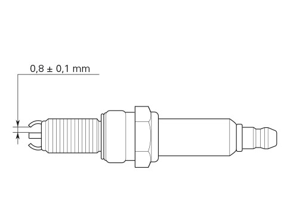

Check the colour of the ceramic insulation around the central electrode: an even, light brown colour indicates the engine
is in good condition and running at the right temperature.
Inspect the centre electrode for wear and check spark plug gap, which should be: 0.8-0.1 mm.

Important
Check the gap between the central and side electrodes. Replace the spark plug if taken value is different from the specified
one or the spark plug shows clear signs of carbon settling.
Warning
Do not use spark plugs with inadequate thermal rating or incorrect thread length.
The spark plug must be securely installed.
If a spark plug is loose, it can overheat and damage the engine.